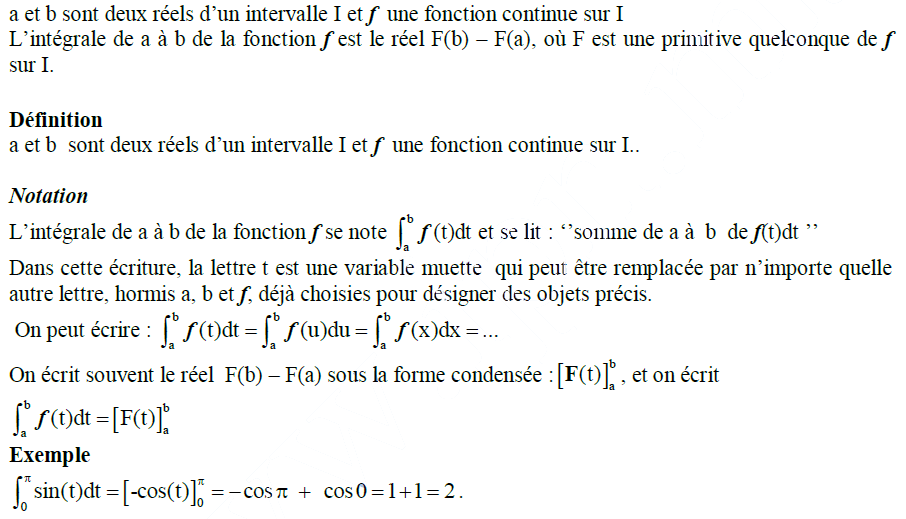
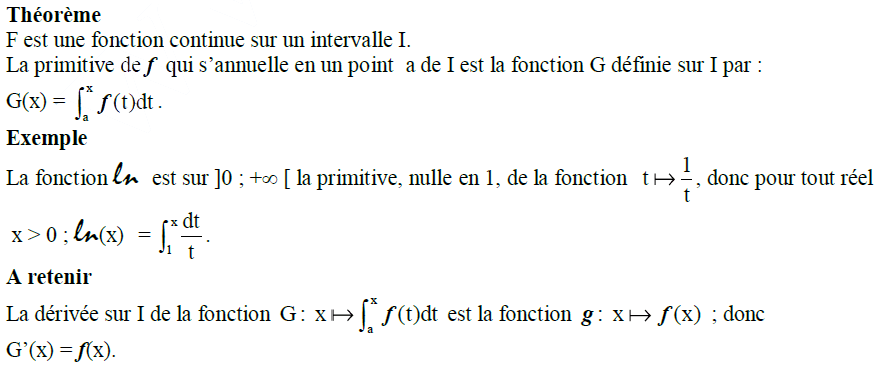
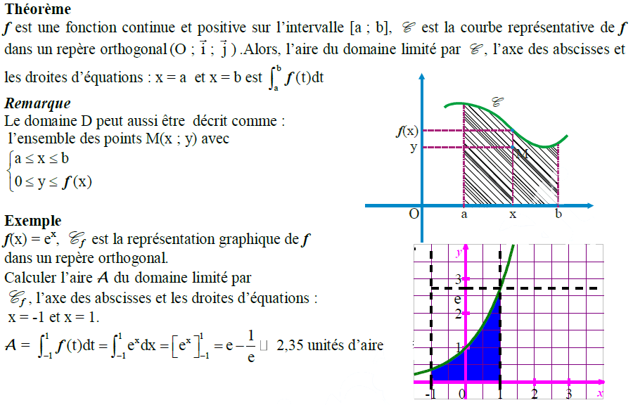
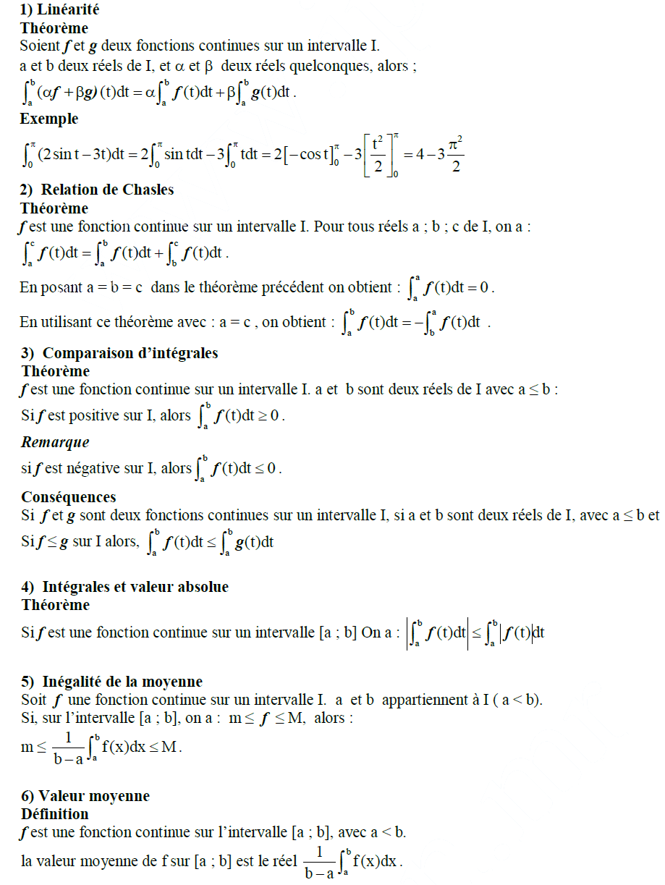
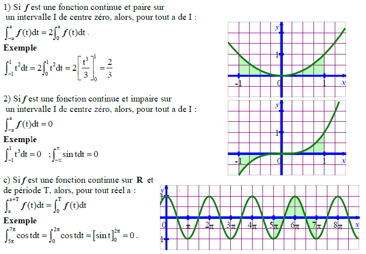
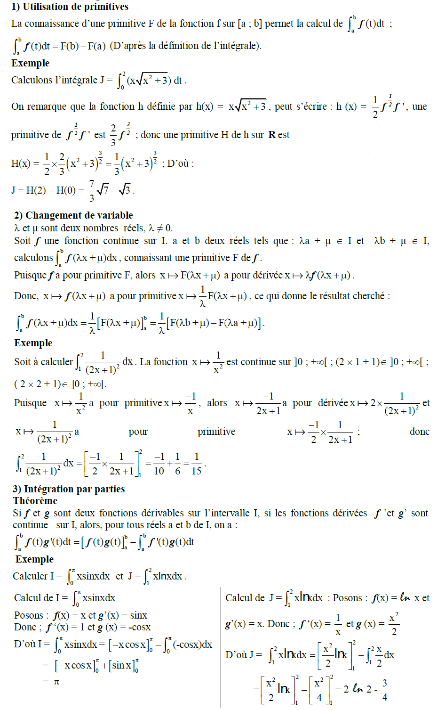
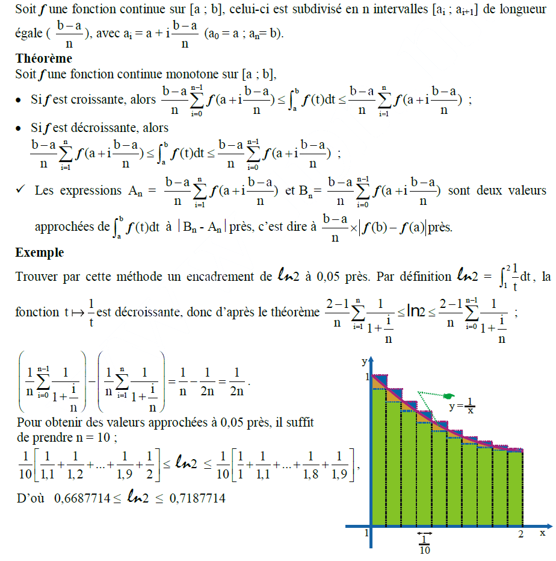
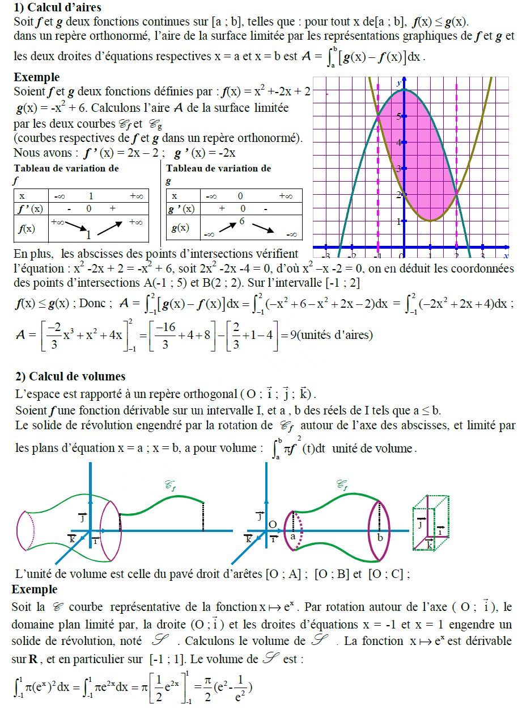

Calcul Intégral
I - Notion d’intégrale

II - Intégrale et primitive

III - Aires et Intégrales

IV - Propriétés de l’intégrale

V - Propriétés des intégrales de fonctions paires, impaires, périodiques

VI - Calculs d’intégrales

VII - Approximation d’une intégrale : Méthode des rectangles

VIII - Calcul d’aires et de volumes
